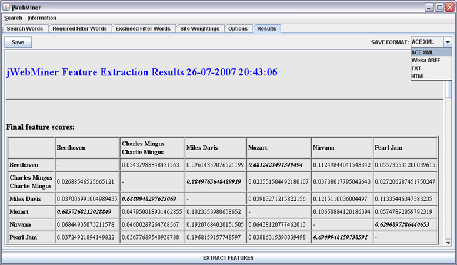
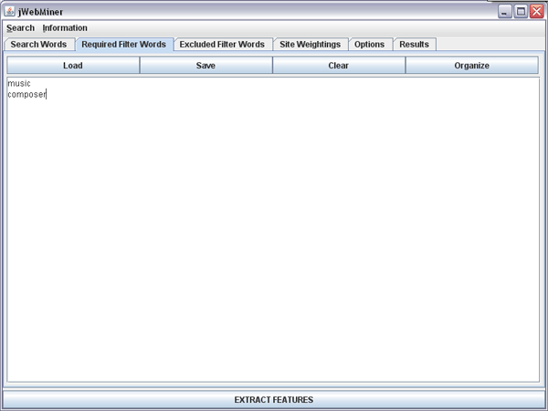

| Tutorial |
|---|
This section of the manual provides a brief guided tour of jWebMiner's basic functionality. More details as well as significant additional functionality not discussed in this tutorial can be accessed in the other sections of this manual.
First Steps
Begin by installing the jWebMiner software if it has not already been installed. Details on how to do this are provided in the Installation section of this manual. Then run the software by double clicking on the jWebMiner.jar file, as described in the Using the Software section of this manual.
The jWebMiner interface is divided into several panels that may be accessed via tabs below the menu bar. Each of these panels is described in a separate section of this manual, and each panel is also introduced in this tutorial. The menu bar itself allows access to additional functionality, such as the Network Search Dialog Box, but will not be coved in this tutorial. The EXTRACT FEATURES button appears below all of the panels, and it initiates feature extraction using the setting in all of the panels, regardless of which panel is currently in the interface's foreground.
The Search Words Panel
The Search Words Panel is the panel that is placed in the interface's foreground when jWebMiner is launched. This panel allows users to select the search strings for which cultural features are to be extracted from the web. It allows two types of feature extractions, namely "co-occurrence extraction" and "cross tabulation extraction". These can be selected using the radio buttons at the top of the Search Words Panel.
We will begin with a co-occurrence analysis. In this type of analysis the relative co-occurrence on the internet of each line in the PRIMARY SEARCH STRINGS text area is measured pairwise when combined with every other line in the same text area. In other words, the feature values produced are based on relatively how frequently each string in the PRIMARY SEARCH STRINGS text area appears on the same web page as each other string. The SECONDARY SEARCH STRINGS text area is ignored in co-occurrence analyses. Co-occurrence analysis is useful for measuring the relative similarity between each of the primary search strings. In order to see how this works, enter the musical artist names shown in Figure 1 into the PRIMARY SEARCH STRINGS text area.
Figure 1: A screenshot of the Search Words Panel showing search strings for a co-occurrence extraction that will compare the relative pairwise similarity between the names of six different musical artists.
In this example, hit counts will be found for all occurrences of both Pearl Jam and Nirvana on the same web page, for both Pearl Jam and Beethoven, for both Pearl Jam and Mozart, and so on until hit counts for all possible pairs of primary search strings have been extracted. This means that jWebMiner will effectively measure the cultural similarity of each pair of these musical artists based on how many web pages they both appear on.
Notice that the first line in Figure 1 contains a "<SYNONYM>" tag. This is so that the hit counts for "Charles Mingus" and "Charlie Mingus" will be combined, as they refer to the same artist. More details on synonyms are provided in the Search Words Panel section of this manual.
Performing a Co-Occurrence Analysis
The Co-Occurrence Extraction radio button on the Search Words Panel is selected by default, so we are prepared to begin feature extraction. In order to do this, press the EXTRACT FEATURES button at the bottom of the jWebMiner interface. This will cause a progress bar to appear, as shown in Figure 2. This progress bar will be displayed any time that the EXTRACT FEATURES button is pressed, and the user can press the Cancel button to stop processing at any time.

Figure 2: A screenshot of the feature extraction progress bar.
If a problem occurs during processing then a dialog box will be displayed describing the problem and allowing the user to cancel processing or perform some other action, as appropriate to the situation. Note that each query will be submitted to a given web services up to 3 times if it is unsuccessful before it is reported to the user, as sometimes the service is simply busy at the moment that a particular query is submitted. If a query fails three times consecutively then the user is presented with the option of either trying up to another 3 times or cancelling the feature extraction.
Once processing is complete, the Results Panel will be brought to the foreground of the graphical user interface, as shown in Figure 3. Note that the exact numerical results that you encounter when performing this feature extraction may be slightly different than those shown here, as the web changes with time.

Figure 3: A screenshot of the Results Panel showing the final feature values extracted using the search strings shown in Figure 1. The SAVE FORMAT combo box has been selected by the user in order to choose the format to save feature values in.
The table shown in Figure 3 indicates the feature values that have been extracted for each of the search strings specified in Figure 1. The feature value in each entry of the table essentially represents the cultural similarity of the artist in the entry's row with the artist in the entry's column, based on relatively how often the two artists appear on web pages together. The absolute magnitude of each numerical value is not necessarily significant, however. What is significant is the relative magnitude of values in each row. The bold italic values indicate the highest values in each row.
Note that "Charles Mingus" and "Charlie Mingus" are grouped together in the table because they are defined as synonyms in Figure 1. Note also that the entries on the diagonal are marked with hyphens, as they represent the similarity between each search string and itself .
The Results Panel can in fact show many more types of reports than simply feature values, as discussed in the Results Panel section of this manual, but they are beyond the scope of this tutorial.
Once features such as those shown in Figure 3 have been extracted, it can then be useful to save them to disk for future access or post-processing. Two types of saving can be performed. The reports shown in the Results Panel can be saved exactly as they appear in the interface as HTML files to be easily read by humans in the future. Alternatively, final feature values can be exported to ACE XML, Weka ARFF or newline delimited text files to facilitate post-processing by software such as ACE or Weka. In order to do either of these, choose the desired file format using the SAVE FORMAT combo box at the top right of the Results Panel and then press the Save button at the top left.
Performing a Cross Tabulation Analysis
Let us now turn to the second type of feature extraction that can be performed with jWebMiner, namely cross tabulation analyses. Return to the Search Words Panel by pressing on the Search Words tab. Then click on the Cross Tabulation Extraction radio button on the Search Words Panel. This will enable the text area labeled SECONDARY SEARCH STRINGS. Enter the musical genre names into this text area that are shown in Figure 4.

Figure 4: A screenshot of the Search Words Panel showing search strings for a cross tabulation extraction that will compare the relative associations between the names of six different musical artists and each of three different genres of music.
In cross tabulation analyses jWebMiner calculates the relative pairwise internet co-occurrence of each line in the PRIMARY SEARCH STRINGS text area with every line in the SECONDARY SEARCH STRINGS text area. This is useful in categorizing terms. In the case illustrated in Figure 4, the extent to which each of the 6 artists are associated with each of the 3 genres will be measured by the features extracted.
Initiate feature extraction by once again pressing the EXTRACT FEATURES button. Results such as those in Figure 5 will be displayed once processing is complete. Once again results are displayed as a table, although it is no longer appropriate to enter a hyphen in some table entries, as all entries are relevant in cross tabulation analyses. The value in each entry of each row can be considered to represent an artist's measured membership score in each genre relative to the other genres. As was the case with co-occurrence analysis, the results can be saved in a variety of file formats.

Figure 5: A screenshot of the Results Panel showing the final feature values extracted in a cross tabulation analysis of the search strings shown in Figure 4.
Filter Words
Although the results shown in Figures 3 and 5 are not bad, it can sometimes be useful to reduce the noisiness in final feature values by eliminating hits that are included in page counts that are not relevant to the topic at hand. For example, although in Figure 5 Mozart is clearly correctly classified as classical music, his value for grunge music is still non-zero, which is an example of noise, as it is unreasonable to classify Mozart as a composer of grunge music. jWebminer provides functionality for using two kinds of "filter strings" that can be entered in the Required Filter Words Panel or the Excluded Filters Words Panel to help reduce such noise.
Let us begin by considering "required filter strings" in the context of the experiment shown in Figure 4. Here the experiment is related to music, so any hits unrelated to music can be considered noise as far as feature extraction is concerned. For example, a site on Hinduism might easily include both the words "Nirvana" and "Classical", and would therefore contribute a hit to hit counts, but would have nothing to do with music, and would thus be a false count. The Required Filter Words Panel allows users to enter strings that must be found on a site in order for it to be counted as a hit during feature extraction. These strings are in addition to search strings entered in the Search Words Panel themselves, and these required filter strings apply to all searches.
Choosing required filter strings involves carefully striking a balance between eliminating as many irrelevant hits as possible and including as many relevant hits as possible. Too many filter words or filter words that are too limiting will have a negative impact on feature values. Consider the required filter strings shown in Figure 6, which contains two filter strings, namely "music" and "composer". The choice of "music" is probably a good one, as it helps to ensure that all counted hits are relevant to music. Although it is true that there may certainly be relevant pages that do not contain the word "music" explicitly and will thus be eliminated from page counts by this filter string, recall that the absolute number of pages counted is not important compared to well balanced ratios between search strings. The "music" filter is unlikely to systematically unbalance results, but is likely to eliminate noise, so it is likely a good choice for a required filter word.

Figure 6: A screenshot of the Required Filter Words Panel with two basic filter strings entered.
The "composer" filter is likely a poorer choice, however. Although it would likely be a good choice if only classical composers were being considered, for example, it is much less likely that the word composer will be mentioned with respect to other genres of music, such as grunge. This filter term therefore holds the danger of introducing a systematic bias that could unbalance feature values.
Before moving on, it should be mentioned that the Required Filter Words Panel can process more sophisticated filter strings than those shown in Figure 6. Details are provided in the Pattern-Based Filter Strings section of the Required Filter Words Panel portion of this manual.
The opposite of required filter strings are "excluded filter strings". These are strings that may not be present on a web site if it is to be counted in page counts. Excluded filter strings may be entered using the Excluded Filters Words Panel, shown in Figure 7.
Choosing excluded filter strings also involves carefully striking a balance between eliminating as many irrelevant hits as possible and including as many relevant hits as possible. For example, it may be useful to use "paradise" as an excluded filter string, as in Figures 7, if a band such as "Nirvana" is a search string. However, this would be an unwise excluded filter string if the band "The Sabres of Paradise" is also one of the search strings, as it would not receive any hits. In general, too many filter words, filter words that are too limiting or filter words that are inappropriate given the search strings being used will have a negative impact on feature values.
.
Figure 7: A screenshot of the Excluded Filter Words Panel with one filter string entered.
Specifying Source Sites and Source Weightings
As discussed above, filter strings can sometimes be imperfect or incomplete solutions to reducing feature noise. Another approach is to limit queries to specific web sites rather than the web as a whole, or to emphasize particular sites. For example, in the case of music queries, sites such as All Music, Pitchfork, freeDB, Billboard, Art of the Mix, A-Z Lyrics, etc. can be good sources.
The Site Weightings Panel allows users to enter specific sites to search individually and separately from the whole available network (or as well as the whole available network, if desired). Relative weights can also be assigned to each site (and/or the whole network) to give certain sources more weight in final feature calculation than others, although this is beyond the scope of this tutorial (details are provided in the Site Weightings Panel section of this manual).
If the text area of the Site Weightings Panel is left blank then it is assumed that the entire network is to be searched. If one or more sites are specified then they will each be searched separately for each query and the hit counts for each of them will be combined when final feature values are calculated. Each line of the text area corresponds to a different source.
If the text area contains at least one specified site, then the whole network will not be searched automatically. If it is desirable to search both the whole network as well as one or more specific sites, then the "<WHOLE_NETWORK>" tag must be placed on one line. An example of this can be seen in Figure 8, where both the whole network and www.allmusic.com specifically will each be searched separately and results combined during final feature calculation.
It should be noted that it may be unwise to specify too many source sites. The reason for this is different for the reason for not specifying too many filter terms, however. Entering a large number of source sites will not degrade performance, but it will linearly increase the number of queries that need to be performed, which increases feature extraction processing time and carries the risk of exceeding the daily quotas of individual web services, which further extends processing time. Note also that excluding the whole network and only including a few sites can result in no hits being found for certain search strings, which is problematic.
Figure 8: A screenshot of the Site Weightings Panel with both the whole network and specifically the www.allmusic.com web site selected to be searched separately. Since no weights are specified the hit counts from both sources will be assigned equal weights during feature calculation.
Additional Options
There are a variety of other settings that can be used to affect which web services are used to generate hit counts, what conditions are placed on the queries that are submitted to web services, how feature values are calculated and which reports are generated. Although beyond the scope of this tutorial, they are discussed in the Options Panel section of this manual.

Figure 9: A screenshot of the Options Panel showing default settings.
Improving Feature Extractions
It has been discussed above how inappropriate filter words or too many filter words and sites can compromise feature quality. An example of this is shown in Figure 10, which resulted from a feature extraction with the settings in Figures 4, 6, and 7 and a source limitation to www.allmusic.com. Although the results are better in some ways than in Figure 5, they are worse overall. For example, although Mozart has an even higher rating for the classical genre, and a 0 membership in grunge (both of which are improvements over the results shown in Figure 5), a serious problem becomes apparent with Mingus: no hits were found that met the combined requirements of the required filter strings, excluded filter string, and source limitation to www.allmusic.com. This means that it was impossible to classify Mingus.
Figure 10: Results from a feature extraction with the settings in Figures 4, 6, and 7 and a source limitation to www.allmusic.com.
Figure 9 therefore illustrates an important principle to consider when extracting cultural features from the web: exercise judicious thought and care when imposing limitations on queries to avoid compromising results. Additional ideas for improving feature extractions are provided in the Hints and Suggestions section of this manual.